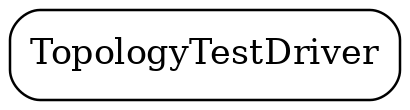
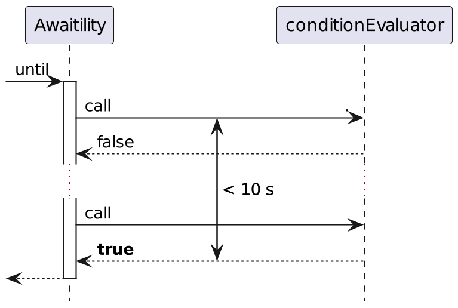
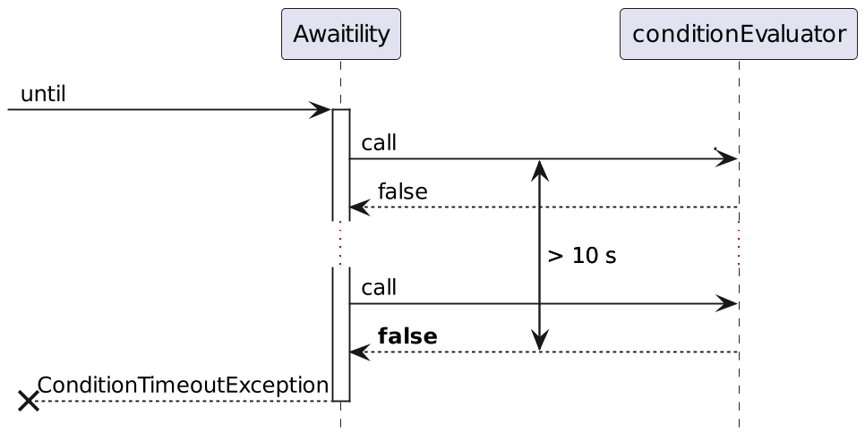

GenericContainer redis = new GenericContainer(
DockerImageName.parse("redis:5.0.3-alpine"))
.withExposedPorts(6379);
String address = redis.getHost();
Integer port = redis.getFirstMappedPort();
underTest = new RedisBackedCache(address, port);Mocks vs TestContainers
 | Иван Пономарев
|
Почему я решил сделать этот доклад?
Kafka streams testing: A deep dive (Joker 2020, online)

О чём пойдёт речь
Современный интеграционный тест
Современный интеграционный тест
Современный интеграционный тест
Современный интеграционный тест
Современный интеграционный тест
Современный интеграционный тест
Что у нас есть?
Моки |  | Реальные системы |
Использовать моки — это как учить химию по мультикам!
То ли дело настоящий эксперимент!
Что у нас есть для настоящих экспериментов?

TestContainers in Action
Набор стереотипов
Моки внешних сервисов
Моки внешних сервисов
Моки внешних сервисов
Моки | | Реальные системы |
| Мы не контролируем внешний сервис и его работоспособность |
Пример из книги Humans vs. Computers
WireMock может
имитировать ответ от сервиса на запрос

WireMock может
верифицировать произведённые вызовы

WireMock может
«шпионить», перехватывая вызовы к настоящему сервису

Как быть с RDBMS/NoSQL/Message brokers и иными?
Как быть с RDBMS/NoSQL/Message brokers и иными?
Mocks vs TestContainers: функциональность
Mocks | | Testcontainers |
|
Mocks vs TestContainers: функциональность
Mocks | | Testcontainers |
|
|
Mocks vs TestContainers: простота и скорость запуска
Mocks | | Testcontainers |
|
Mocks vs TestContainers: простота и скорость запуска

Mocks vs TestContainers: простота и скорость запуска
Mocks | | Testcontainers |
|
|
TC Startup time
Ничего не поделаешь, если

Удобство
Mocks | | Testcontainers |
| «Страшные» тесты некогда ждать и отлаживать, хочется их скипнуть |
Integration Mocks vs TestContainers
Mocks | | Testcontainers |
|
Integration Mocks vs TestContainers
Mocks | | Testcontainers |
|
|
Наличие
Mocks | | Testcontainers |
Иногда они есть, но чаще всего их нет. |
|
Пример № 1. JedisMock и верификация вызовов
JedisMock
JedisMock
По состоянию на июнь 2022, поддерживает 103 из 225 команд (46%)

JedisMock
Зачем нужен JedisMock
RedisCommandInterceptor
RedisCommandInterceptor
RedisCommandInterceptor
Работа как Test Proxy

Выводы по Jedis-Mock
 Для большинства задач тестирования Redis TestContainers работает.
Для большинства задач тестирования Redis TestContainers работает.- Но если вы желаете верифицировать поведение собственной системы или изучать её в ситуации, когда сбоит сам Redis — JedisMock в помощь.
Пример №2. Kafka Streams TopologyTestDriver и ад асинхронного тестирования
|  |
Kafka streams testing: A deep dive (Joker 2020, online)
TopologyTestDriver
 Простой (обычная зависимость)
Простой (обычная зависимость)- Быстрый
- Удобный (хороший API для Arrange и Assert)
Главное отличие:
TopologyTestDriver | | Real Kafka |
Работает синхронно (один поток и event loop, как в браузере) | Работает асинхронно во многих тредах на многих контейнерах |
Мысленный эксперимент: ограниченность асинхронных тестов
Мы ввели "ping" и ожидаем, что система вернёт нам единственный ответ "pong".
2 секунды. Нет ответа.
3 секунды. Нет ответа.
 4 секунды. "pong". Расходимся?
4 секунды. "pong". Расходимся?- 5 секунд. Тишина.
- 6 секунд. Тишина.
 7 секунд. "boom!"
7 секунд. "boom!"
Проблема с поллингом
Awaitility: частичное решение проблемы с асинхронным тестом
Awaitility: частичное решение проблемы с асинхронным тестом
Awaitility.await().atMost(10, SECONDS).until(() ->
{ // returns true
});
Awaitility: частичное решение проблемы с асинхронным тестом
Awaitility.await().atMost(10, SECONDS).until(() ->
{ // returns true
});

Awaitility: падение теста
Awaitility.await().atMost(10, SECONDS).until(()->
{ // returns false for more than 10 seconds
});
Возможности Awaitility DSL
Ничего не напоминает?
Проблемы Awaitility
Настоящий тест с Awaitility: часть 1
Настоящий тест с Awaitility: часть 2
Тест с TopologyTestDriver
В чём же подвох??
Выводы по KafkaStreams:
- Вам всё равно не обойтись без помощи TopologyTestDriver
- Но надо понимать ограничения этой технологии, аспекты, в которых она не работает так же, как и реальный кластер
Падение на TTD означает что код плох. Удачное выполнение на TTD не означает, что код хорош.
- При необходимости, небольшое количество тестов производится на контейнеризованном кластере.
История №3. Apache Beam: мок как один из поддерживаемых бэкендов
Apache Beam Runners
| 
|
Паттерн: Mock Backend

Множества функциональных возможностей
 |
Матрица поддерживаемых возможностей (фрагмент)
|  |
Direct Runner
 | "Direct Runner performs additional checks to ensure that users do not rely on semantics that are not guaranteed by the model… Using the Direct Runner helps ensure that pipelines are robust across different Beam runners." |
Apache Beam’s Direct Runner
- Падение на Direct Runner означает что код плох.
Удачное выполнение на Direct Runner не означает, что код хорош.
Как затестировать Google Cloud Dataflow без Google Cloud — мне неведомо.
Пример №4. Celesta: не спешим отказываться от H2
 |
|
Celesta
|
|
Celesta

Celesta
Celesta
 |
|
Celesta Comparison Tests
Celesta
Celesta
Работает на H2 ⇒ будет работать на PostgreSQL, MS SQL, etc..
Mock Backend здорового человека!
Возможности in-memory H2
- Стартует с пустой базой моментально
- Мигрируется моментально
- Поступающие запросы трассируются элементарно
(SET TRACE_LEVEL_SYSTEM_OUT 2) - После теста состояние «забывается»
CelestaTest: Arrange
CelestaTest: Arrange
CelestaTest: Local arrange
CelestaTest: Act & Assert
CelestaTest
- Работает моментально
- Создаёт пустую базу данных нужной структуры под каждый тест
- Провоцирует на написание большого количества тестов на всю логику работы с базой данных
Цена, которую мы платим — это ограничение функциональности в пределах того, что поддерживает Celesta.
Выводы о TestContainers
- Могут создавать проблемы со скоростью запуска и конфигурацией машины разработчика.
- Настоящие сервисы — «чёрные ящики», их трудно загонять в нужное состояние.
- Интеграционные тесты с «настоящими» сервисами — асинхронные, с непреодолимыми трудностями. Эти трудности надо осознавать.
Выводы о моках
- Специализированные моки подключаются проще, стартуют и выполняются быстрее.
- Моки имеют специальную функциональность, облегчающую тестирование.
- Моки работают не так же, как настоящая система. Этот факт надо понять и принять.
- Для вашей системы их может попросту не существовать.
Общие выводы
- При формировании стратегии тестирования надо ориентироваться не на стереотипы, а на глубокое понимание особенностей системы и доступного инструментария. Всякий раз стратегия будет разной!
- Тестируемость системы в целом должна быть одним из критерием при выборе технологий.
Самый Главный Вывод
Надо использовать и моки, и контейнеры,
но прежде всего — собственную голову.
@inponomarev